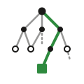

Applied AI · Forward Deployed & Infrastructure Engineering
I build bounded AI systems and diagnostic tools that keep data on hardware I control and send models only redacted, minimal context. At Red Hat, I do OpenShift escalation and root-cause engineering—debugging production Kubernetes clusters and building internal diagnostic AI tooling. Before that: FedRAMP Linux security at SAP NS2, L3 escalations at Redis, and OpenStack support at Red Hat.
Static Go CLI and library that answers PromQL offline from captured Prometheus TSDB dumps—replaying WALs in scratch space, salvaging corrupt blocks with gap reporting, and exposing injection-safe typed named queries.

Bounded web-research harness where an LLM proposes searches, while deterministic Python code verifies verbatim byte-offset quotes in article bodies, tracks per-attempt cost, and writes Inconclusive when evidence falls short.
Interactive walkthroughs, smaller tools (backtalk, chimera-tts), and org code standards live at lowmag.cc and github.com/lowmagic.
Own OpenShift escalations and root-cause investigations under a 15-minute response SLA. Built an engineer-directed diagnostic AI assistant and refactored 22 Red Hat domain skills into deterministic tools with source-verified canonicalization.
Technical lead for Linux security and DISA STIG compliance across AWS GovCloud FedRAMP environments. Built CI/CD-distributed Ansible and Python OpenSCAP/eMASS pipelines cutting manual compliance work by >50% and meeting the baseline for a $1B federal contract renewal.
L3 escalation point for Redis Enterprise on Linux and Kubernetes; isolated a critical banking mTLS renewal failure and built deterministic Docker reproduction tooling for a Kubernetes Operator cluster-sync race condition.
Escalations for telco NFV production clouds (SR-IOV, NUMA, OVS-DPDK, SDN) under a 15-minute response SLA, tracing TripleO regressions to source across Python, Heat, and Ansible. Promoted twice in two years.
Current Red Hat Certifications: Red Hat Certified Engineer (Enterprise Linux & Ansible) · OpenShift Administrator · Developer in Cloud-native Applications · Specialist in Containers
Previously Held: Red Hat Certified Architect (RHCA) · CompTIA Security+ · HashiCorp Terraform Associate · DoD Public Trust